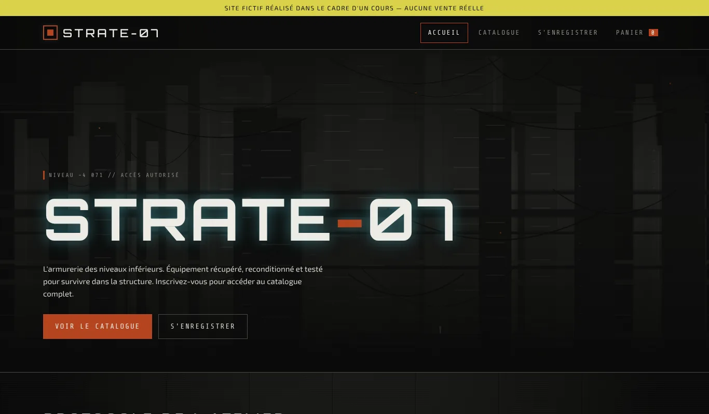
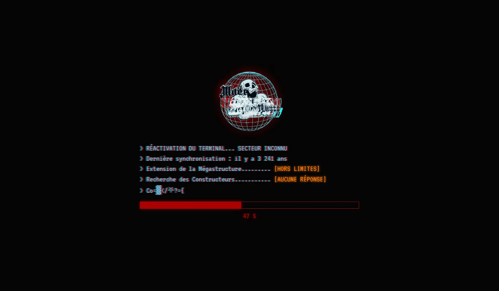
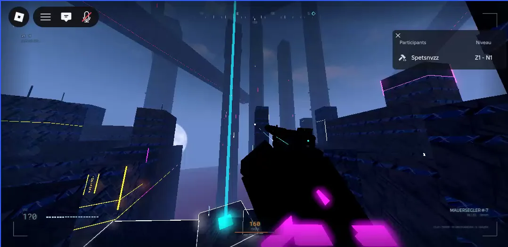
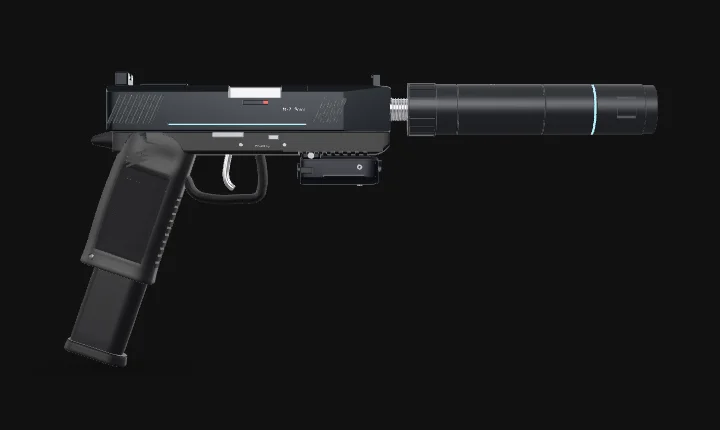

Web, PHP / MySQL, ESGIEn ligne
STRATE-07
Boutique fictive complète : comptes clients, catalogue de 53 produits, commandes et espace administrateur. Base MySQL, mise en ligne chez un hébergeur.
Recherche une alternance3 jours en entreprise, 2 jours à l'école · Toulon (Var)
Étudiant en 1re année à l'ESGI Toulon, parcours DSII (Développement et Sécurité de l'Information et de l'Infrastructure).
« J'apprends en construisant : mes propres environnements, mes propres outils, mes propres projets. »
Avant l'informatique : un Bac Pro Commerce, une année de BTS Management Commercial Opérationnel, puis plusieurs années de contact client, notamment comme manager en restauration rapide et vendeur en boulangerie. Ces expériences m'ont appris à garder mon calme sous pression et à respecter les procédures.
Pourquoi l'informatique : je produis de la musique en autodidacte depuis mes 18 ans. Cela suppose de maîtriser des outils complexes et de résoudre seul des problèmes techniques. L'informatique est la suite logique de cette démarche.
Je cherche une alternance, ouverte aux trois familles du cursus (développement, systèmes/réseaux, cybersécurité). Ma spécialisation se construira sur le terrain. J'annonce mon niveau réel plutôt que de l'enjoliver.
Utilisateurs et groupes, permissions, sudo, suivi des processus (top), recherche dans les logs (grep, dmesg), archivage tar, scripts bash.
Conception d'une topologie sur deux sites, plan de VLAN et d'adressage, relais DHCP, VPN IPsec, ACL (projet NovaTech).
Python (bases), HTML/CSS/JavaScript (bases), C et VBA Excel (cours ESGI), notions de PHP (PDO) et de Laravel.
Modélisation MCD / Merise (cours ESGI, outil Looping), MySQL, phpMyAdmin, requêtes préparées.
Hébergement mutualisé (alwaysdata), base MySQL de production avec utilisateur dédié, transfert FTP chiffré (TLS), HTTPS, GitHub Pages. GLPI installé en local sous WampServer (TP).
Mesures appliquées sur STRATE-07 : mots de passe hachés, requêtes préparées, contrôles côté serveur, cookies sécurisés. Autoformation en cours : Linux/Kali et bases du pentest.
Blender, Roblox Studio (projets MAUERSEGLER M-7 et jeu Roblox).
VS Code, Git et GitHub, GitHub Pages, WampServer (Apache, PHP, MySQL), phpMyAdmin, FileZilla, VirtualBox, GLPI, Looping, Blender, Roblox Studio, Notion, Obsidian.

Web, PHP / MySQL, ESGIEn ligne
Boutique fictive complète : comptes clients, catalogue de 53 produits, commandes et espace administrateur. Base MySQL, mise en ligne chez un hébergeur.

Web, HTML / CSS / JSEn ligne
Site artistique de mon projet musical vvh0sn3xt : écran de démarrage animé, effets glitch, galerie filtrable. Publié avec GitHub Pages.

Jeu, Roblox / LuauEn développement
Parcours en vue à la première personne dans une mégastructure. Système de déplacement complet (grappin, course sur les murs, téléportation…) en phase de réglage.

3D, Blender
Pistolet fictif modélisé dans Blender, visible en 3D interactive sur la page, et intégré dans mon jeu Roblox.
Projet fil rouge d'Architecture des réseaux : conception du réseau d'une entreprise fictive sur deux sites (Paris et Lyon). Topologie physique, équipements, plan de VLAN et d'adressage, VPN IPsec et règles de sécurité.
Voir le détailInstallation sécurisée de GLPI en local sous WampServer : VirtualHost Apache, base et utilisateur MySQL aux droits limités. En cours : alimentation du parc (import CSV, agents GLPI sur machines virtuelles).
TP en coursProjet de groupe en Laravel (PHP) avec des rôles répartis : j'ai mis en place le squelette du site sur ma machine virtuelle. Dépôt GitHub partagé, branches, commits et merge.
Projet de groupeOutil d'automatisation personnel, installé sous VirtualBox. Je l'étends en Python avec des objectifs concrets, comme coder un décorateur.
En coursMachines virtuelles sous VirtualBox pour pratiquer Linux, avec mes notes de cours structurées dans Obsidian.
ContinuProjet à venir : refondre le site de l'entreprise d'un ami, à Hyères, en conservant son bon référencement Google.
À venirComposition, communication et diffusion de bout en bout, en autonomie totale. Un projet mené dans la durée, qui demande de la rigueur et de la persévérance.
Découvrir l'universJe recherche une alternance en rythme 3 jours en entreprise et 2 jours à l'école : mercredi, jeudi et vendredi en entreprise, lundi et mardi à l'école. Basé à Toulon (Var).